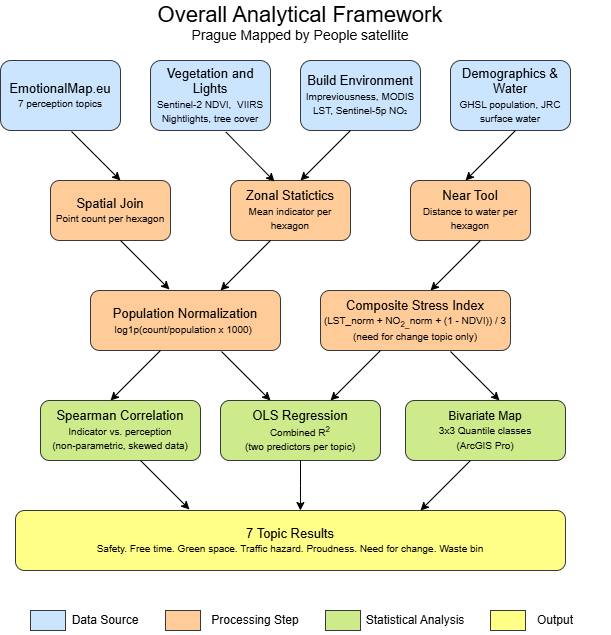
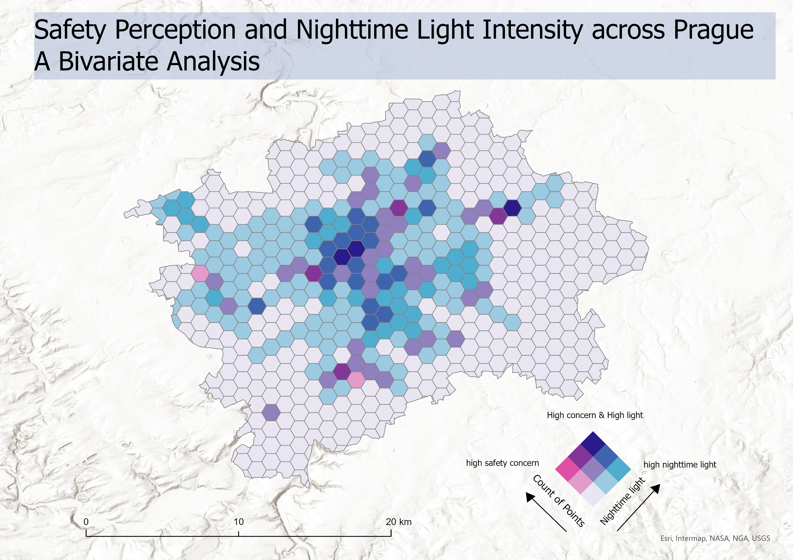
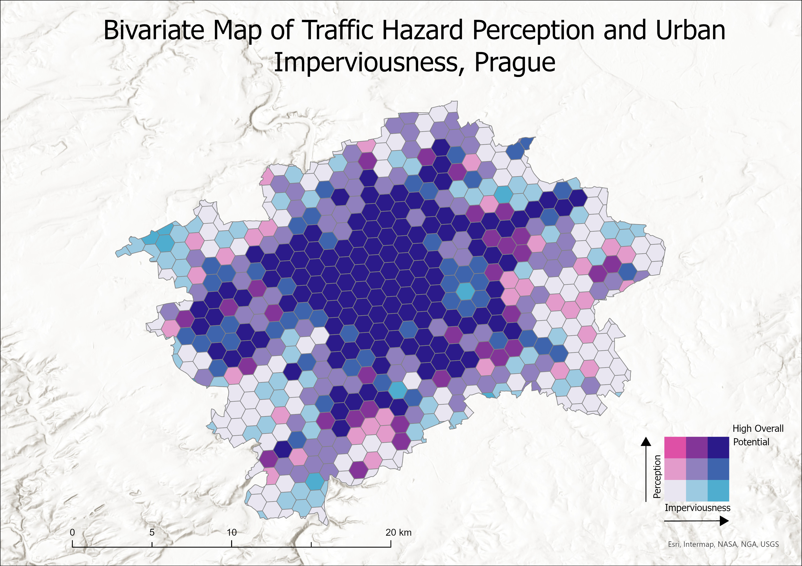
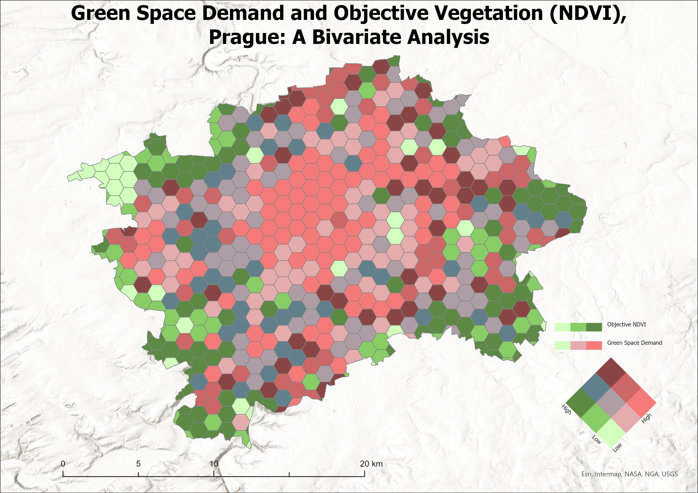
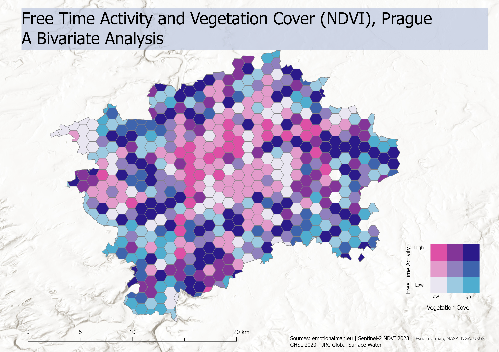
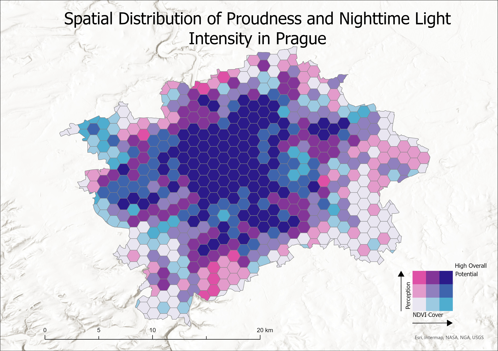
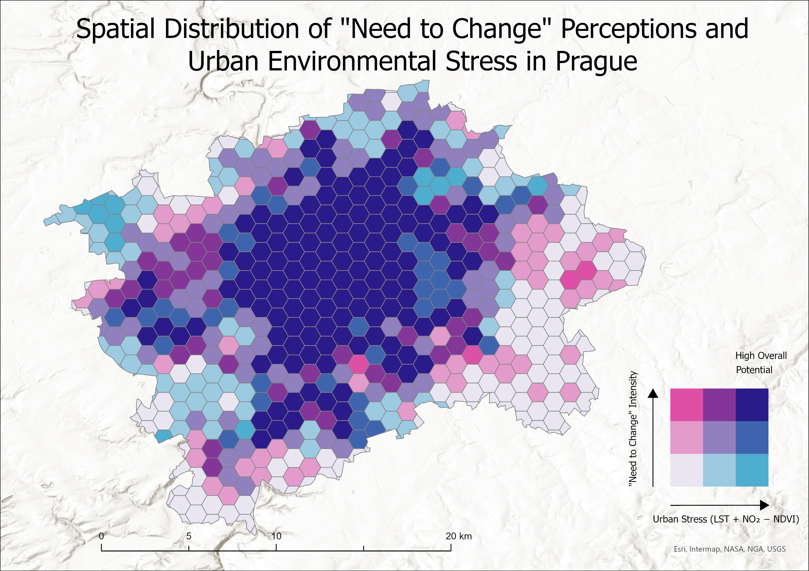
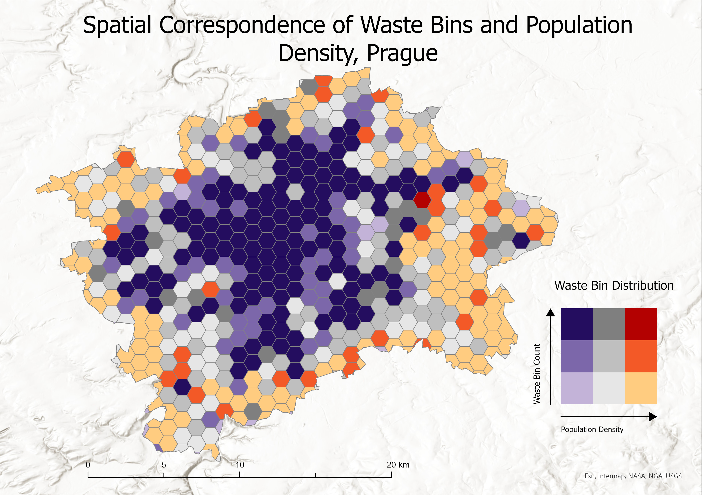

Introduction
This thesis investigates the spatial relationship between citizens’ subjective perceptions of urban quality and satellite-derived environmental indicators across Prague. Drawing on Participatory GIS (PPGIS) data collected through the EmotionalMaps.eu platform, the study analyses seven distinct urban quality topics: safety, free time, lack of green space, traffic hazard, civic pride, need for change, and waste infrastructure, each mapped by Prague residents as geo-tagged point marks and spatially aggregated to a regular 1 km² hexagonal grid covering the city’s administrative boundary.
For each topic, environmental indicators extracted from Copernicus, Sentinel, and MODIS satellite products are correlated with citizen perception marks using Spearman rank correlation. The analysis reveals statistically significant spatial relationships across all seven topics (p < 0.001), confirming that physical urban characteristics measurable from space are systematically reflected in how residents experience their city. Raw participation counts were normalised by residential population to remove the sampling bias inherent in voluntarily submitted geo-referenced data.
An interactive web dashboard was developed to communicate findings to non-specialist audiences and evaluated through usability testing with eight participants, with iterative refinements informed by user feedback.
Objectives
This thesis investigates the spatial relationship between citizens’ perception of the urban environment and satellite-derived environmental indicators across Prague, using PPGIS data integrated with Copernicus Earth Observation products.
- Analyse citizen perception data from EmotionalMaps.eu across seven urban quality topics using a 1 km² hexagonal grid
- Extract and process satellite indicators (NDVI, Nighttime Lights, LST, NO2, Imperviousness) from Copernicus and GEE
- Quantify spatial relationships using Spearman rank correlation between population-normalised citizen marks and each indicator
- Produce bivariate choropleth maps to visualise spatial co-variation of perception and satellite data across all seven topics
- Design, deploy, and evaluate an interactive web dashboard through usability testing with eight participants
Study Area
Prague, the capital of the Czech Republic, served as the study area. With a population of approximately 1.4 million and an administrative extent of 496 km², the city encompasses a spatially diverse urban landscape, from the dense historic core of Old Town and Malá Strana through mixed residential and commercial inner districts to suburban zones and green-belt periphery defined by the Vltava river corridor and surrounding forested hills.
The entire administrative boundary was subdivided into a regular hexagonal tessellation of 579 grid cells, each covering approximately 1 km², generated using the ArcGIS Pro Generate Tessellation tool. This spatial framework enabled direct integration of citizen-contributed PPGIS marks with gridded satellite products at a consistent resolution. Satellite data were acquired for the 2023 reference year from Google Earth Engine and the Copernicus Land Monitoring Service; citizen perception data were provided by the EmotionalMaps.eu participatory mapping platform (Pánek et al., 2021).
Methodology
The study integrated two primary data streams: citizen perception marks from EmotionalMaps.eu and satellite-derived environmental indicators processed via Google Earth Engine and ArcGIS Pro. The analytical workflow comprised five stages:
- Data collection: Point marks for seven urban quality topics extracted from EmotionalMaps.eu for Prague (Pánek et al., 2021), yielding between 318 and 579 hexagonal observations per topic
- Spatial aggregation: Points joined to the 1 km² hexagonal grid; raw counts normalised by residential population (GHSL 2020) to control for participation density bias
- Satellite indicator extraction: Mean raster values per hexagon computed using Zonal Statistics as Table in ArcGIS Pro; indicators listed in the table below
- Statistical analysis: Spearman rank correlation as primary inferential test, selected for robustness to strongly right-skewed count distributions; OLS regression applied to multi-indicator topics to assess independent predictor contributions
- Bivariate mapping: 3×3 choropleth maps combining quantile-classified citizen marks with quantile-classified satellite indicators, produced in ArcGIS Pro
Satellite Data Sources
| Indicator | Source | Resolution | Reference Year |
|---|---|---|---|
| NDVI (Vegetation Cover) | Sentinel-2 Level-2A, Google Earth Engine | 10 m | 2023 (growing season) |
| Nighttime Lights | NOAA VIIRS Day/Night Band, Google Earth Engine | 500 m | 2023 (annual mean) |
| Imperviousness (IMD) | Copernicus HRL Imperviousness Density | 10 m | 2018 |
| Land Surface Temp. (LST) | MODIS MOD11A2 8-day composite, GEE | 1 km | Jun–Aug 2023 |
| NO2 Column Density | Sentinel-5P TROPOMI OFFL L3, GEE | ~5 km | 2023 (annual mean) |
| Tree Canopy Cover | Hansen Global Forest Change v1.10 | 30 m | 2000 baseline |
| Population Density | Global Human Settlement Layer (GHSL, JRC) | 100 m | 2020 |
| Water Proximity | JRC Global Surface Water (Pekel et al., 2016) | 30 m | 2020 |
| PPGIS Marks | EmotionalMaps.eu (Pánek et al., 2021) | Point | 2023 |

Key Results
Spearman rank correlations between population-normalised citizen perception marks and satellite-derived environmental indicators were statistically significant across all seven topics (p < 0.001). The summary table below lists the strongest indicator per topic; individual findings are described beneath it.
| Topic | Strongest Indicator | ρ (Spearman) | Direction |
|---|---|---|---|
| Safety | Nighttime Lights | +0.485 | ▲ Positive |
| Free Time | NDVI | +0.261 | ▲ Positive |
| Lack of Green Space | NDVI | −0.321 | ▼ Negative |
| Traffic Hazard | Imperviousness (IMD) | +0.710 | ▲ Positive |
| Civic Pride | Nighttime Lights | +0.474 | ▲ Positive |
| Need for Change | Composite Index (LST + NO2 − NDVI) | +0.712 | ▲ Positive |
| Waste Bin | Population Density | +0.716 | ▲ Positive |
All correlations significant at p < 0.001. ρ values are population-normalised where applicable.
Topic-by-Topic Findings
Safety (ρ = +0.485). Nighttime light intensity was the strongest predictor of safety perception. Hexagons with brighter artificial illumination received consistently higher safety marks, reflecting well-established links between street lighting and perceived personal security. NDVI showed a weaker but significant positive association, suggesting that well-lit green spaces are perceived as safe rather than threatening in the Prague context.
Free Time (ρ = +0.261). Vegetation cover (NDVI) was the strongest correlate of leisure activity marks. Importantly, the raw correlation was negative (−0.221) before population normalisation and reversed to positive (+0.261) after normalisation, demonstrating that PPGIS data must be corrected for residential density before interpretation. Greener hexagons, once adjusted for how many people live there, attract proportionally more free-time activity.
Lack of Green Space (ρ = −0.321). The negative correlation with NDVI confirms that residents mark the absence of green space in areas where satellite data also record low vegetation. Citizen marks function as spatially explicit deficit signals, clustering in built-up low-NDVI zones and largely absent from forested peripheries, consistent with environmental justice patterns documented in European cities.
Traffic Hazard (ρ = +0.710). Imperviousness density (IMD) from the Copernicus High Resolution Layer was the strongest single-variable predictor across all topics. Highly impervious hexagons covering dense road networks and junctions received the most traffic hazard marks, making imperviousness a reliable satellite proxy for citizen-perceived traffic risk at the 1 km² grid scale.
Civic Pride (ρ = +0.474). Nighttime lights emerged as the dominant predictor, with pride marks concentrating in the illuminated inner city and historic core. The result suggests that urban vitality and commercial activity, both reflected in artificial light intensity, shape residents’ sense of civic identity more strongly than vegetation or surface temperature.
Need for Change (ρ = +0.712). A composite urban stress index combining Land Surface Temperature, NO2 column density, and inverted NDVI outperformed any single indicator. Hexagons scoring high on thermal stress, air pollution, and low vegetation simultaneously received the most need-for-change marks, confirming that residents perceive cumulative environmental pressure rather than responding to one stressor in isolation.
Waste Bin (ρ = +0.716). Population density (GHSL 2020) was the sole statistically significant predictor in OLS regression once imperviousness was controlled for (R² = 0.434). Demand for waste infrastructure scales directly with how many people occupy a grid cell, and the satellite-derived density layer captures this signal cleanly, validating GHSL as a planning-relevant input for urban service allocation.
Bivariate Choropleth Maps
Each map classifies hexagonal grid cells jointly by citizen perception intensity and the strongest satellite indicator, using a 3×3 quantile colour matrix. Dark purple cells indicate areas of both high citizen concern and high environmental stress; light blue cells indicate low perception and high environmental quality.







Explore all topics interactively: Prague Dashboard ↗
Conclusion
This thesis demonstrated that satellite-derived environmental indicators are meaningful spatial proxies for citizens’ subjective perceptions of urban quality in Prague. Statistically significant Spearman correlations were established for all seven PPGIS topics (p < 0.001), confirming that physical urban characteristics measurable from Earth Observation data are systematically reflected in how residents experience their city.
Several findings carry methodological significance. Population normalisation proved essential: in the Free Time topic, the raw correlation between NDVI and leisure activity reversed sign after normalisation (from −0.221 to +0.261), demonstrating that voluntarily contributed PPGIS data cannot be used without accounting for residential population bias. For the green space topic, citizen marks functioned as spatially explicit deficit signals rather than inventories of existing vegetation, clustering in low-NDVI urban zones consistent with the environmental justice literature.
The composite urban stress index for the Need for Change topic (combining LST, NO2, and inverted NDVI) achieved the strongest correlation (ρ = +0.712), confirming that multi-source composite indicators outperform single-variable models. Imperviousness emerged as the dominant predictor for traffic hazard (ρ = +0.710), while population density was the sole significant driver of waste bin distribution once imperviousness was controlled for in OLS regression.
An interactive Streamlit dashboard was developed and evaluated through usability testing with eight participants. Feedback informed iterative refinements to the bivariate map interface, indicator descriptions, and navigation. The platform enables non-specialist audiences to explore all seven perception topics alongside their satellite correlates dynamically.
These findings support the integration of Earth Observation data into participatory urban research workflows, offering planners a scalable, cost-effective means of aligning citizen perception data with objective environmental measurements across city-wide spatial grids.